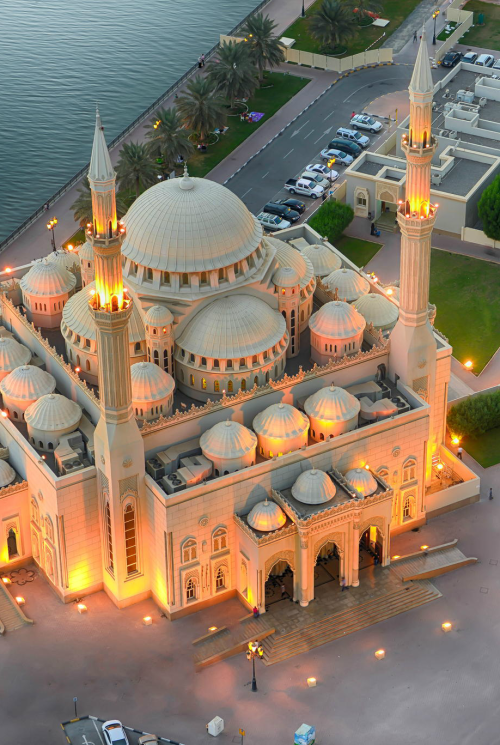
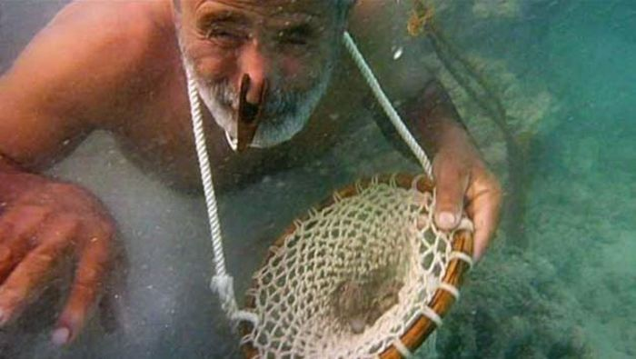
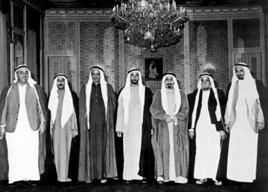

Shout About UAE



The Trucial States
In the 1800s, the British signed treaties with individual Emirates that resulted in an area called The Trucial States. The Emirates agreed not to give any other countries any territory except to Britain and to have agreements with other countries only with permission from the British. In return, the British promised to protect the coast from all attacks from sea and to help when the states were attacked on land.Pearling
Pearl trade increased in the 19th and 20th century providing an income and employment to people in the gulf. an economic depression and the Japanese invention of the cultured pearl damaged the pearling industry.Oil
In the early 1930s the first oil company teams conducted geological surveys in the UAE. Almost thirty years later, in 1962, the first cargo of crude oil was exported from Abu Dhabi. With the economy progressing, HH Sheikh Zayed bin Sultan Al Nahyan was chosen as the Ruler of Abu Dhabi. Under Sheikh Zayed, the oil revenues resulted in massive boost to the infrastrusture with the construction of schools, housing, hospitals and roads throughout Abu Dhabi.A Development Fund and Shipping
One of Sheikh Zayed’s early actions was to increase his contributions to a Development Fund, with Abu Dhabi becoming the Fund’s largest donor. Meanwhile HH Sheikh Rashid bin Saeed Al Maktoum, Ruler of Dubai since 1939, replaced pearling by becoming a part of the shipping industry. And, in 1969 as the Emirate of Dubai began exporting oil, Sheikh Rashid started to focus on programs aimed at improving the quality of life of his people.The UAE Forms
In 1968, with the British announcement that it shall be leaving the Gulf , Sheikh Zayed stepped in to quickly establish closer ties among the Emirates. Together with Sheikh Rashid, Sheikh Zayed called for a federation that would include not only the seven Emirates that together made up the Trucial States, but also Qatar and Bahrain. An agreement was reached between the rulers of six of the Emirates (Abu Dhabi, Dubai, Sharjah, Umm al-Quwain, Fujairah and Ajman), and the federation to be known as the United Arab Emirates was formally established on 2 December 1971. The seventh Emirate, Ra’s al-Khaimah, joined the federation the following year.Since the formation of the union, the seven Emirates have forged a distinct national identity. The UAE’s political system has been designed to ensure the country’s heritage is maintained, adapted and preserved by combining tradition with a modern administrative structure.